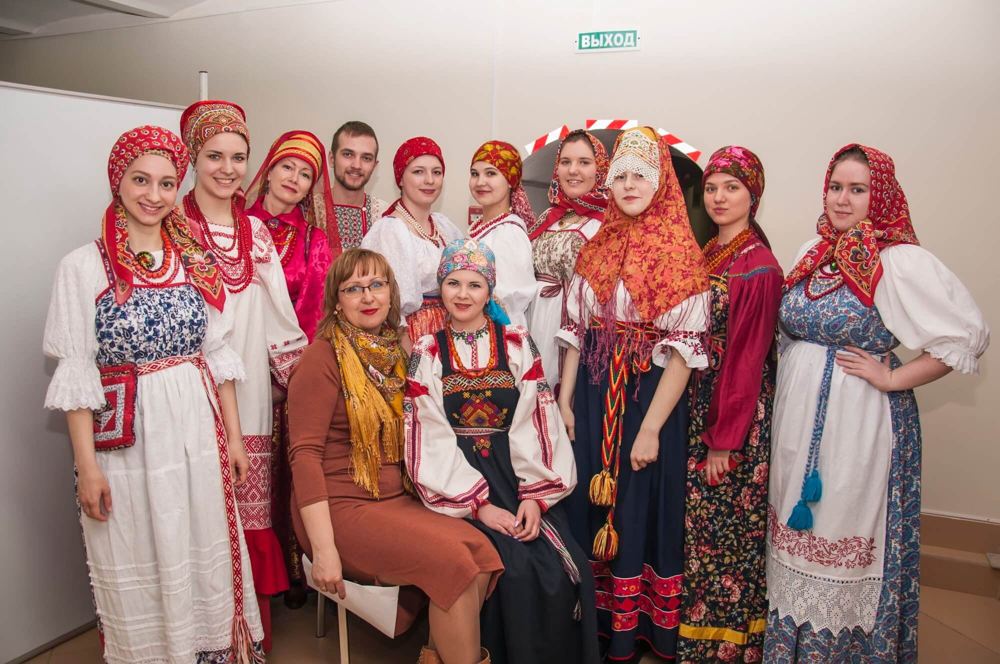

-
Краеведение и школа, исторические исследования школьников представлены на круглом столе
31 августа в Новосибирском историческом парке «Россия – моя история» состоялся круглый стол организованный АНО «Историческое общество Сибирского федерального округа» совместно с местным отделением Императорского Палестинского общества, Новосибирской православной семинарией и музеем-лабораторией «У истоков города» Новосибирской классической гимназии № 17.
-
Под сенью Умревинского острога
18 августа, на территории Мошковского района прошло праздничное мероприятие «Под сенью Умревинского Острога», приуроченное к 315-летию со дня основания первого русского административного пункта на территории современной Новосибирской области.
-
Фестиваль «Перекрестки истории»
Прошедший 14 июля 2018 года фестиваль «Перекрёстки истории» стал первым шагом к организации нового исторического пространства в парке культуры и отдыха города Новосибирск -«Заельцовский».
-
Евразийская интеграция и безопасность
7 июня 2018 г. в Новосибирске прошла третья научно-практическая конференция «Евразийская интеграция и безопасность». Организаторами конференции выступили «Историческое общество Сибирского Федерального округа», Российская академия народного хозяйства и государственной службы ,Новосибирское высшее военное командное училище и экспертный клуб «Сибирь – Евразия».
-
Фестиваль « Сибирский Огонь» прошел 11 июня в Новосибирской области.
АНО « Историческое общество СФО» организовало и провело в Новосибирской области Седьмой Международный военно-исторический фестиваль «Сибирский огонь» . Он состоялся с 10 по 12 июня 2018 г. в селе Большой Оёш Колыванского района Новосибирской области. Основные показательные выступления фестиваля состоялись 11 июня. В канун празднования Дня России фестиваль собрал около 50 000 зрителей, вновь подтвердив статус одного из самых массовых событийных исторических мероприятий Сибирского федерального округа.
-
 Платок как культурный феномен. Его роль во французской и российской истории и художественной культуре
Платок как культурный феномен. Его роль во французской и российской истории и художественной культуре
19 апреля в Краеведческом музее Новосибирской области прошёл круглый стол “Платок как культурный феномен. Его роль во француз-ской и российской истории и культуре”. Организованный АНО « Истори-ческое Обществом Сибирского федерального округа» и общественной организацией Альянс Франсез Новосибирск.
-
РОССИЯ В ВОЙНАХ И ВОЕННЫХ КОНФЛИКТАХ ХХ – НАЧАЛА XXI ВЕКА
8 февраля 2018 г. в конференц-зале Сибирского государственного университета путей сообщения (СГУПС) прошла Всероссийская научная конференция «Россия в войнах и военных конфликтах ХХ – начала XXI века», посвящённая 100-летию образования Красной Армии и 100-летию окончания Первой мировой войны.
-
Конференция "Октябрьская революция 1917 года в России и ее роль в мировой истории"
В Новосибирске состоялась межрегиональная научно-практическая конференция, посвященная 100-летию Великой Октябрьской революции. Ее организаторами выступили правительство Новосибирской области, Сибирский институт управления, НГУ, Институт истории СО РАН и Историческое общество Сибирского федерального округа.
-
Телемост между региональными отделениями РИО
24 ноября в Новосибирске во второй день конференции « Октябрьская революция 1917 года и ее роль в мировой истории» работа шла в нескольких секциях на разных площадках.
-
Электронная коллекция документов
Уникальные исторические документы о революции и гражданской войне в Сибири теперь доступны каждому. «Новониколаевск в огне революции» - так называется электронная коллекция исторических документов , презентация которой прошла в правительстве Новосибирской области. Инициатором масштабного проекта выступило АНО «Историческое общество Сибирского федерального округа» вместе с Новосибирской областной научной библиотекой. К работе были привлечены архивы и музеи Новосибирска и других сибирских городов.
-
Проект «Краеведческий десант» - современный формат изучения Родины
Историческое общество СФО провело в новосибирской государственной областной научной библиотеке презентацию своего проекта «Краеведческий десант». Встреча началась открытием фотовыставки и показом видео-блогов, снятых студентами-журналистами НГУ, а завершилась дискуссионным обсуждение проблем развития и преподавания региональной истории.
-
Конференция «Достояние Сибири: история, современность, перспективы»
12 октября в Искитиме прошла межрегиональная научно-практическая конференция «Достояние Сибири: история, современность, перспективы», посвященная 80-летию Новосибирской области и 300-летию Искитима. Конференция организована Архивной службой Новосибирской области, АНО « Историческим обществом СФО», при поддержке правительства Новосибирской области. В ней приняли участие руководители образовательных учреждений, кандидаты и доктора исторических наук, преподаватели, архивисты, краеведы, сотрудники музеев и учащиеся образовательных учреждения.
-
Учебник
В год празднования 80-летнего юбилея Новосибирской области во все региональные школы поступит новый уникальный учебник «История Новосибирской области». 16 июня Губернатор Новосибирской области Владимир Городецкий провел рабочую встречу с авторами учебника истории и рабочей группой по его подготовке. АНО « Историческое общество СФО» , было одним из организаторов идеи создания учебника, активно участвовало в его подготовке и выпуске.
-
Научный семинар, посвященный национальной безопасности
14 сентября в Новосибирск на три дня съехались молодые ученые со всей России. Они приняли участие в междисциплинарном научном семинаре «Роль Сибири и Дальнего Востока в обеспечении национальной безопасности России: история и современность».
-
Выставки ювелирного искусства «Традиции эпохи Фаберже»
Выставки ювелирного искусства «Традиции эпохи Фаберже», посвященной 170 – летию со дня рождения великого русского ювелира карла фаберже.
-
Научно-практическая конференция «Государство, Общество и Церковь»
29-30 мая Сибирским институтом управления в рамках празднования 80-летия Новосибирской области проведена научно-практическая конференция «Государство, Общество и Церковь: образование и культура – как основа обеспечения национальной безопасности России».
-
Всероссийский форум «Россия- пространство диалога народов»
С 27 по 30 апреля в НГУ проходил II Всероссийский форум «Россия-пространство диалога народов». География форума простирается от Москвы до Петропавловска-Камчатского.
-
Круглый стол «Революция 1917 года в России: причины и предпосылки»
1 марта 2017 года в конференц-зале Мэрии города Новосибирска состоялся круглый стол «Революция 1917 года в России: причины и предпосылки». АНО « Историческое Общество СФО» активно участвовало в мероприятии.
-
Итоги историко-этнографического симпозиума
17 февраля в конференц-зале РАНХиГС состоялся Историко-этнографический симпозиум с участием представителей стран ШОС «Этническая картина мира в современной гуманитарной науке».
-
120-лет Западно-Сибирской железной дороге
28 октября 2016 в Новосибирской государственной областной научной библиотеке прошла презентация межрегионального проекта "120-лет Западно-Сибирской железной дороге".
-
Конференция «XX век в исторической памяти России и Казахстана»
2 июня 2016 года Отделение РИО в г. Новосибирске совместно с Экспертным клубом «Сибирь-Евразия», Институтом истории СО РАН и Сибирским институтом управления – филиалом РАНХиГС при Президенте РФ провели Международную научно-практическую конференцию «ХХ век в исторической памяти России и Казахстана».
-
Многотомная историческая библиотека «Сибири и Дальнего Востока»
В Академгородке в г. Новосибирске , в Институте Археологии и Этнографии СО РАН прошло расширенное совещание под председательством академика РАН А.П. Деревянко. Совещание посвящено подготовке к изданию многотомной исторической библиотеки «Сибири и Дальнего Востока».
-
В Новосибирске прошла конференция по укреплению межнационального и межрелигиозного согласия
С 11 по 13 мая 2016 г. в Новосибирске прошла Международная научно-практическая конференция «Государство, Общество и Церковь: укрепление межнационального и межрелигиозного согласия, социальной стабильности, развитие и совершенствование механизмов взаимодействия».
-
Международная Вахта памяти «Нас миллионы панфиловцев» в Новосибирске
10 декабря в Новосибирске прошла Международная вахта памяти «Нас миллионы панфиловцев», в рамках которой в столицу Сибири доставили Штандарт акции, уже побывавший в Оренбурге и Челябинске.
-
Подготовка к изданию многотомной «Сибирской исторической библиотеки»
В Новосибирске 30 октября под руководством Сопредседателя РИО Академика Анатолия Деревянко прошло заседание по подготовке издания многотомной энциклопедии «Истории Сибири и Дальнего Востока».
-
Международный Форум «Олимпиада-80: 35 лет спустя» в Новосибирске
В нынешнем году исполнилось 35 лет со времени проведения в Москве легендарной Олимпиады 1980 года. В честь этого юбилея новосибирцы и гости города могли стать участниками необычного события: международного форума «Олимпиада-80: 35 лет спустя».